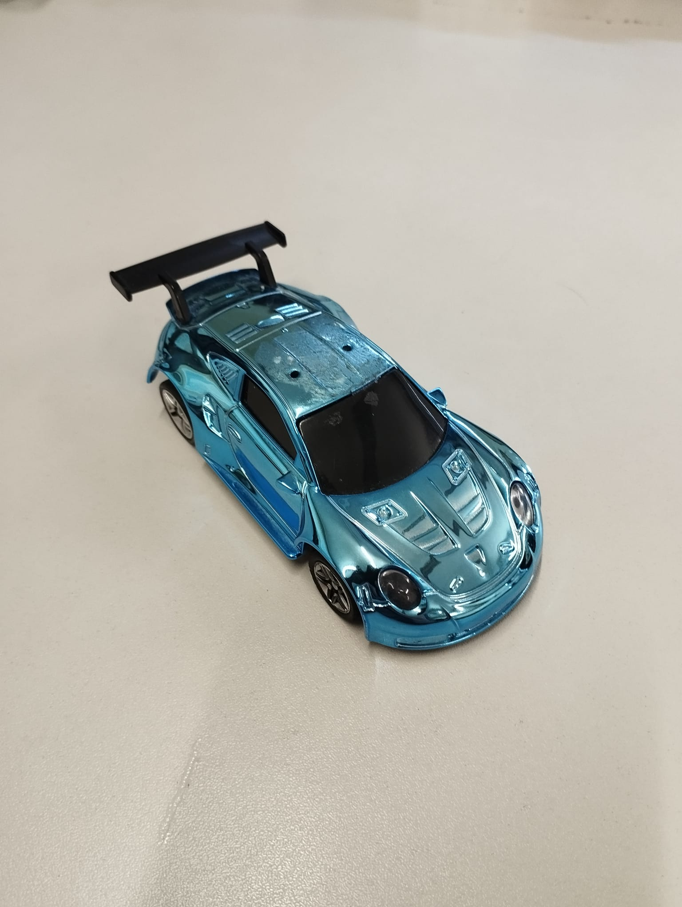
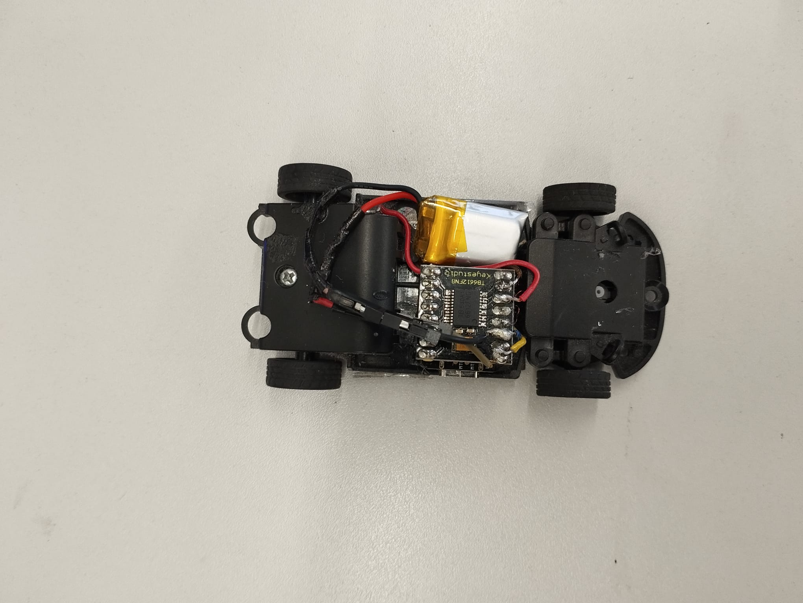

Control
Optimization, safety filters and closed-loop behavior for autonomous vehicles.
Robotics Engineering MSc Student
I build autonomous robotic systems across control, perception, simulation and real hardware.
About
Robotics Engineering MSc student focused on autonomous systems, computer vision, control systems and embedded robotics. My work combines optimization-based control, perception pipelines and electromechanical prototyping.
Optimization, safety filters and closed-loop behavior for autonomous vehicles.
LiDAR, SLAM and mapping workflows for mobile robotics.
Mechanical assembly, PLC logic and operator-facing industrial automation.
Selected Work
Autonomous systems
Autonomous racing controller using CBFs, CLFs and optimization-based control for collision avoidance.


Multi-robot systems
Multi-robot warehouse coordination system using LiDAR perception, SLAM and path planning.
Industrial automation
Industrial folding machine prototype integrating a custom mechanical frame, operator controls and PLC-based automation.


Mapping and localization
Compact SLAM demo focused on mapping and localization workflows for mobile robotics.